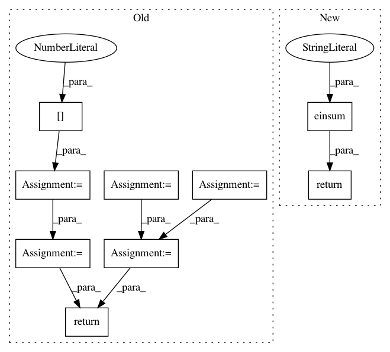

c8e7a4ff3fb3fbc14476876b6087a68c6d56ab45,geomstats/geometry/poincare_ball.py,PoincareBallMetric,inner_product_matrix,#PoincareBallMetric#Any#,300
Before Change
if base_point is None:
base_point = gs.zeros((1, self.dimension))
dim = base_point.shape[-1]
n_sample = base_point.shape[0]
lambda_base =\
(2 / (1 - gs.sum(base_point * base_point, axis=-1)))**2
expanded_lambda_base =\
gs.expand_dims(gs.expand_dims(lambda_base, axis=-1), -1)
reshaped_lambda_base =\
gs.repeat(gs.repeat(expanded_lambda_base, dim, axis=-2),
dim, axis=-1)
identity = gs.eye(self.dimension, self.dimension)
reshaped_identity =\
gs.repeat(gs.expand_dims(identity, 0), n_sample, axis=0)
results = reshaped_lambda_base * reshaped_identity
return results
After Change
(2 / (1 - gs.sum(base_point * base_point, axis=-1)))**2
identity = gs.eye(self.dimension, self.dimension)
return gs.einsum("i,jk->ijk", lambda_base, identity)
In pattern: SUPERPATTERN
Frequency: 3
Non-data size: 9
Instances
Project Name: geomstats/geomstats
Commit Name: c8e7a4ff3fb3fbc14476876b6087a68c6d56ab45
Time: 2020-04-09
Author: gerald@pop-os.localdomain
File Name: geomstats/geometry/poincare_ball.py
Class Name: PoincareBallMetric
Method Name: inner_product_matrix
Project Name: tensorflow/cleverhans
Commit Name: 4887ef8baecbf5315ec0f235e56a4f93cd05aad7
Time: 2018-10-04
Author: nottombrown@gmail.com
File Name: cleverhans/attacks_tf.py
Class Name:
Method Name: spm
Project Name: geomstats/geomstats
Commit Name: 656e5e7d6b75cf0a7fad757a7ca59174c66e85f0
Time: 2020-04-09
Author: gerald@pop-os.localdomain
File Name: geomstats/geometry/poincare_ball.py
Class Name: PoincareBallMetric
Method Name: inner_product_matrix